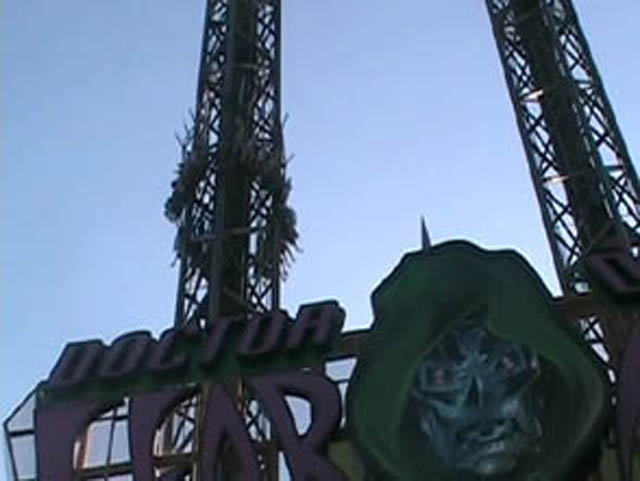
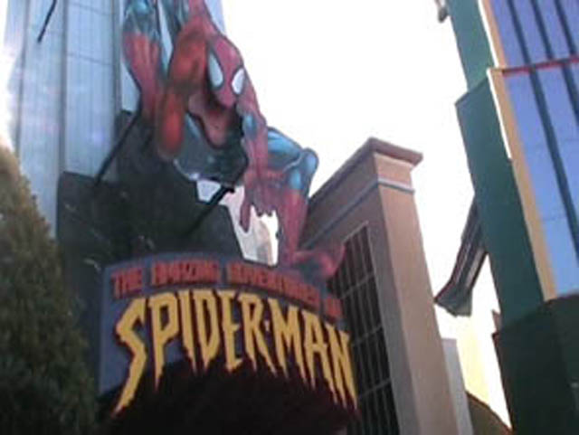
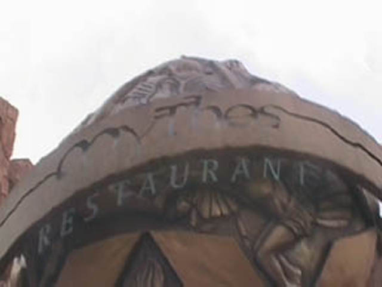

Consisting of two decent parks, the Universal Orlando Resort features a decent amount of fun stuff to do. Aside from some fun rollercoasters, they've also got really cool dark rides, great food, top notch theming, soaking water rides, and more. In the original Universal Studios Florida, you can mainly find a bunch of 3D shows with some cool rides in between. And in 2009, they built a big rollercoaster called Rockit, and personally, I think it looks really badass. But for me, Revenge of the Mummy and Men in Black is what made the Universal Orlando Resort. Then in 1999, Universal Studios Florida got its new brother park, Islands of Adventures. Now when it first opened, it was EXTREMELY BADASS!!! And while it's still fun, yeah. That park definetly took a big hit over the years. I mean, the park opened with 5 Themed Lands, 3 Awesome B&Ms, a bunch of completely kickass dark rides, and more. But recently, some of that stuff...dissapeared. But I'll scream and rant about that later. But yeah, The Wizarding World of Harry Potter Area came to the park and was a HUGE hit with the General Public. And while Potterheads are in love with the new area, and it seems fun, the effect it's had on the park has...not been good. For reasons that will be discussed later. And hey. Even without all the awesome theming, the rides themselves are very high quality and top notch. When I heard of Disney buying out Marvel, I was worried about Superhero Island at Islands of Adventures. But luckily, that played out just fine without any problems. Now we have to see if Disney buying FOX is going to hurt them at all. Universal Studios Florida and Islands of Adventures are two fun and decent theme parks. And when you roll them up into one resort, it's a lot of fun. I'll tell you that much. I'd recommend coming out to the Universal Orlando Resort as well as the Disney World Resort. Sure, there are a ton of problems it has now, and some of the decisions its made are some of the worst in the entire theme park industry, but it has a lot to do, and some of the coolest rides in any theme park.
There is a link to a review of all the Rollercoasters at the Universal Orlando Resort.
(Please keep in mind that there is no review of Rockit or Hagrid's Motorbike Adventure because neither of them existed when I last visited the Universal Orlando Resort.)
While the Universal Orlando Resort is doing a great job in most of the other departments, they arn't doing that great in the flat ride department. Mostly, that's because they barely have any flat rides at all. But the one that they do have, like everything else in the park, is really awesome. They have a space shot called Dr. Dooms Fearfall. And let me tell you this, it is by far, the best Space Shot I have been on. When waiting to launch, they say some stuff that really adds to the ride and definetly increases the anticipation. The launch itself seems much more powerful than it does on Maliboomer and Hellevator. And not to mention you get a FANTASTIC view of the Hulk. But aside from Dr. Doom, all the Universal Orlando Resort has is a carousel, a Dumbo type of ride, and some teacups. So while the Universal Orlando Resort may seriously lack in the quantity of flat rides, the one they do have does not lack in quality.

Dr. Doom is without a doubt, the greatest space shot Incrediblecoasters has ever done.
Dark Rides
The Universal Orlando Resort is without a doubt, hauling ass in the Dark Ride Department. It's so good in this department, that it's on the same level as the Disney Parks. Well first off, we'll start off with one of the greatest dark rides Incrediblecoasters has ever been on. Spiderman. You start off by getting in the car and putting on your 3D Glasses. And then, from there, you go off with Spiderman to go fight some villians. Then after being punched by a water villian, we feel wet. So we go hang out by a brick wall. But then Octoman comes out and sprays fire at us. You may think at this point that this is a Six Flags Dark Ride. But then the level of detail and effects reminds you that this is a Universal Dark Ride. Then after fighting more villains, you see an explosion and the whole room lights up. Cause remember, this simulator runs on a track. Then we get scared of Octoman and start to climb up a building. Then we fly around the city with Spiderman and do more Villain Fighting in the sky. While in the sky, Water Villian sprays us with mist, which makes us very moist. Then we jump to a building with Spiderman. But we don't make it and start to fall to the ground. And unlike most simulators, you actually feel like you're falling. Luckily, Spiderman comes and saves us since everybody gets one. While getting saved, we see that the sewers is not an exit. We then see that Spiderman has tied up all the villians and then takes out a camera to take our picture with. The other great dark ride that isn't quite as good as Spiderman, but is still awesome would be Men in Black. Once you get in your cars, you go out and shoot aliens. And not only are the aliens, pretty damn realistic looking, but you can also screw up other cars by making them spin out and not get any points. Now I may not be a Shooting Dark Ride Junkie, but I can safely say that Men in Black kicks ass. While these are the only two dark rides I rode at the Universal Orlando Resort, they were really awesome. I did wait in line for Twister, but after the third preshow, and the fact that we had to leave in 10 minutes to pick up Celeste and Allie from the airport, I had to bail out. Though it did have some cool preshows. They've also got a Cat in the Hat Dark Ride that from what I've heard, sounds really awesome. They've also got a Terminator 3D show, and unlike Universal Studios Hollywood, they still have their E.T. And since my visit, they've added the Simpsons Ride, which I hope to ride at Universal Studios Hollywood soon. I'm pretty sure there are more dark rides that I am missing. But as you can tell, the Universal Orlando Resort is doing awesome in the dark ride department.

Best Simulator Ever and one of the best Dark Rides ever.
Water Rides
While I never rode any water rides at the Universal Orlando Resort, I can tell you that they are awesome. First off, they have Dudly Doo Rights Ripsaw Falls. Now I never rode this ride, but I can tell you that YOU GET WET on it. According to Cody, when his little brother rode Dudly Doo Rights, he got so wet that the ink bled out of his shirt. Now THAT is a wet water ride. Actually, I was planning on going on Dudly Doo Rights Ripsaw Falls when I went to Islands of Adventures. But when I was there, the whole ride was getting a makeover, so it's not my fault that I missed it. I had even bought a poncho at a local drug store before going into the park JUST so I could ride it. (Though the ponchos did come in handy at Disney World.) Aside from that, they've also got Popeye and Bluto's Bilge Rat Barges. This is the resort's river rapids ride. From what I've heard, it is extremely well themed and gets you extremely wet. Now unlike Dudly Doo Rights, Popeye was open the whole day. But for some reason, I never really felt like going on it at all that day, even though I had bought a poncho earlier on that day (Stupid Laziness). And then they've got a Jurrasic Park. While it seemed much better than the California one, I never rode it due to both laziness, and the fact that I had a similar ride over at Universal Studios Hollywood. While I have never ridden any of these water rides, I can definetly say that on the Universal Water Rides, you're gonna get wet.
Dining
I'll tell you this. The Universal Orlando Resort has a lot of food in the park. The resteraunts that you can choose from are endless. For lunch, I chose to eat at Mythos, which has frequently been rated the best amusement park resteraunt. And I'm going to have to agree. The food at Mythos is pretty good. For my lunch, I ended up getting a wrap, which is not a thing that I normally eat at a resteraunt. I also found their bread to be really good. But yeah. Unfortunetly, I've heard a lot of people complain that Mythos totally went downhill since I last ate there, and at this point, I'm pretty sure it doesn't exist anymore and is just another Harry Potter resteraunt. But hey, it had a lovely atmosphere, great service, and a spot for nice Hulk Shots, Mythos still sounds like a really good resteraunt. But like I said, there is a lot more food at the Universal Orlando Resort, and I'm pretty sure that it's good too. And hey, the Harry Potter food is good. That's a plus.

Yeah, a great resteraunt may have been lost, but...never mind.
Theming and Other Attractions
Here are the reviews of all the other stuff at the Universal Orlando Resort. For theming, it is everywhere. Everything at Islands of Adventures is practically theming. So as you can see, the entire resort is dripping with awesome high quality theming. As for other stuff to do at the Universal Orlando Resort, I am sure that they have some awesome shows in both parks that everyone can go and enjoy. Though while I am sure there is a sh*tload of stuff to do at the Universal Orlando Resort, I simply don't know much about it as I was way too focused on all the other stuff I was talking about in the resort. I am sure is a whole goldmine of stuff to do, I just don't feel like going on the website and looking it up.
In Conclusion
The Universal Orlando Resort is a decent place to go and have fun. Not only do they have a lot of stuff to do at the resort, but everything they do have is of really high quality. Sure, they had even more high quality stuff that they got rid of because...I already ranted about this. No need to repeat myself here. The dark rides I rode seemed of really high quality and of the best, the food I ate was delicous and filled me up well. And I'm sure that there's even more stuff for me to do. But remember, you won't be bored at the Universal Orlando Resort. You can get a thrill fix on the Incredible Hulk, get drenched on Dudly Doo Rights, or just go see a 3D show. There's still plenty to do at Universal Orlando Resort.
Enthusiast FAQs.
*Are there kiddy coaster restrictions? - Yes. Neither of the Roller Skaters have any restrictions, but you flat out aren't allowed on the Pterodactyl Flyers anymore. You used to be able to do it with a kid. But they changed that, because Universal Orlando is great at f*cking things up. But hey. That's a MINOR thing.
Tips
*If you want to conquer the entire resort, spend two days. If not, you only need one day.
*Boarding a roller coaster here is practically the same as boarding an airplane. You will have to go through an equal amount of security to get to the ride. BE PREPARED!!!!
*Take Advantage of Single Rider Lines
*While the lockers are free, they do have time limits and are quite expensive if you go beyond the time limit